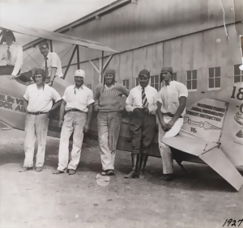

Aviation History
By Scott|July 5th, 2019

I’m calling myself an Aviation Historian nowadays, with an occasional reference to Aviation Futurists. I come from a long family of aviation experts. In fact, on 5 May of 2017, in honor of my dad, RC “Doc” Weaver, I published my first book, "The Pilots of Thunderbird Field"
During the process, I learned a lot about writing and publishing a book. This first book of mine was rushed to be published – and consequently included many typos. I actually wanted to release it around Christmas 2016, but I soon realized that getting a book published takes time – and much effort – to get it right. Later, with the help of my wife and mother-in-law, I was able to publish my second edition – taking care to correct as many of the mistakes and typos as I could. The second edition includes maps of the air fields around Arizona and a few extra photos in the gallery. And it includes a forward by Capt. Jerry Yellin. All of these changes and additions make the second edition a much better product and book.
As an Aviation Historian, it was important for me to capture many interesting details about a time in our country’s history that may have gone unnoticed. I continue to be in touch with people who also have an affiliation with aviation and those who served. Many of these people have provided additional information about that time in our aviation history. Some of it is almost comical. Just last week I was contacted by a gentleman with the name of George Mothershed. As it turns out, he knew my Great Uncle, Jimmy “Cleo Glen” Purinton. George’s father flew with Jimmy at Thunderbird I in Glendale AZ. This is the letter I got from George.
Friday, January 12, 2018
Hello Scott,
My father was a flight instructor at Thunderbird 1, along with your Great Uncle Jim Purinton. My father and Jim remained friends after they left Thunderbird. I also got to know your Great Uncle. The most remarkable thing I remember about your uncle Jim has to do with an event that happened when he was instructing a Chinese student at Thunderbird. He was teaching the student to land. On this particular day, at the same time this Chinese student and your uncle Jim landed their aircraft, a second Chinese student flying solo in another Stearman, was both behind them and on top of them. This second Chinese student also attempted a landing.
As Jim and his student pilot landed their aircraft, the second Stearman landed on top of their plane, and its propeller chopped Jimmy’s aircraft fuselage in two pieces behind the rear cockpit. Emergency vehicles were sent to the scene of the wreckage. They searched through the wreckage of the two planes and couldn’t find either your uncle Jim or his student.
It was about an hour later, that Jim and his student pilot walked into the base of the control tower and checked-in – returning their parachutes – and reported a successful flight. As it turns out, after the accident Jim had taken his student to another Stearman, got in, and took off for a flight of approximately 30 minutes! The point that Jim was trying to make to his student was that he should shake-off a bad landing – just like a jockey shakes off being thrown from a horse – and immediately get back in the air and fly correctly!
While checking in, Jim took off his leather helmet and goggles. It seems that the propeller of the other aircraft had come so close to Jim that it actually sliced a hole in his leather flight helmet!
George went on to say that his father later worked as a crop-duster. He had a business in the Glendale area until he retired in the early 1970s. My uncle Jim often worked with him from time to time. George says that not only was Jim a good pilot, but also an outstanding mechanic and aircraft fabricator. And he had a reputation for being honest and straightforward.
I will continue to collect more information and preserve history as I get to know more people who were a part of Thunderbird Fields.
About Me

Scott Weaver is a public speaker, author, pilot, aviation historian and retired Lt. Col. USAF.